Teorema del valor medio o di Lagrange
Supponiamo che per raggiungere una località B, partendo da una località A distante 150 km da B, si impieghino 3 ore. La velocità media durante il percorso è dunque 50 km/h. Se il viaggio non ha subito interruzioni o altre irregolarità, certamente in qualche istante la velocità è stata esattamente di 50 km/h.
Cioè in qualche istante:
velocità media = velocità istantanea
È conettualmente questo il contenuto del teorema del valor medio, che come vedremo, è denso di conseguenze.
Teorema 5.9.1 (Del valor medio o di Lagrange). Sia f: [a, b] → ℝ derivabile in (a, b), e continua in [a,b]. Allora ∃c ∈ (a,b) tale che
Dim. The geometrical meaning of the theorem is illustrated by the following figure which indicates that the tanget to the point (c, f(c)) is parallel to the secant to a and b.
The equation of the secant line that passes through the points (a,f(a)) and (b,f(b)) is :
Consider the auxiliary map ω(x) defined as the difference between f(x) and y. Then
Because f is continuous on [a, b], it follows that ω is also continuous on [a, b]. Furthermore, because f is differentiable on (a, b) then ω also differentiable on (a,b). Applying Rolle's theorem to the function ω, there exists a number c such that ω'(c) = 0. So there exists a number c in (a,b) such that
f'(c) − [f(b) − f(a)]/(b − a) = 0 ⇒ f'(c) = f(b) − f(a)/(b − a) □
Note that Rolle's Theorem, is a special case of the Mean Value Theorem, where f(b) = f(a).
Esempio 5.9.2. Sia f(x) = x2. Allora f(x) = 2x e il teorema afferma che in ogni intervallo [a,b] esiste un numero c tale che
(b2 − a2)/(b − a)
Utilizzando la differenza di quadrati, possiamo riscrivere (b2 − a2) = (b − a) (b + a), da cui
c = (a + b)/2 = media aritmetica di a e b
Cioè: ogni corda AB della parabola y = x2 è parallela alla tangente nel punto di ascissa uguale alla media aritmetica delle ascisse di A e B. ■
Esempio 5.9.3. Sia f(x) = 1/x. Allora f'(x) = −1/x2 e dal teorema si deduce l'esistenza di c ∈ [a,b] tale che
da cui
c = √ab = media geometrica di a e b
Cioè, ogni corda AB dell'iperbole y = 1/x è parallela alla tangente nel punto di ascissa uguale alla media geometrica delle ascisse di A e B.
Si noti che √ab ≤ (a + b)/2 e cioè che
media geometrica ≤ media aritmetica
Ricordando il significato geometrico di derivata, si deduce subito che se una funzione derivabile è crescente oppure decrescente in un intervallo (a,b) la sua derivata è ≥ 0 oppure ≤ 0 rispettivamente. Il T. di Lagrange permette di dimostrare anche il viceversa. Le due implicazioni sono contenute nel prossimo:
Teorema 5.9.4 (Test di Monotonia). Sia f: (a, b) → ℝ, derivabile. Allora ∀x ∈ (a,b)
f crescente ⇐⇒ f'(x) ≥ 0
f decrescente ⇐⇒ f'(x) ≤ 0
Dim. Dati due punti z,x ∈ (a,b), con x < z
| f è | crecrescente decrescente | ⇔ | [f(z) - f(x)] /(z − x) | è | ≥ 0 ≤ 0 |
Passando al limite per z → x, per il teorema di permanenza del segno, dalle due precedenti relazioni si ottiene ∀x ∈ (a,b)
f crescente ⇒ f'(x) ≥ 0
f decrescente ⇒ f'(x) ≤ 0
Viceversa, sia, ad es., f'(x) ∀ x ∈ (a,b), e proviamo che allora f è crescente in (a,b). Prendiamo dunque due punti qualsiasi x1, x2 ∈ (a,b), x1 < x2 e mostriamo che f(x1) ≤ f(x2). Infatti, applicando il T. di Lagrange ad f sullì'intervallo [x1, x2] abbiamo che esiste c ∈ (x2, x2) tale che
Poiché f'(c) ≥ 0 e x2 − x1 > 0, ne segue f(x1) − f(x2) ≥ 0, cioè la tesi. □
Con la stessa dimostrazione si vede anche che: se f'(x) = 0 per ogni x ∈ (a,b), allora f è costante in ( a,b). Poiché l'implicazione inversa (se f è costante in (a,b) allora ha derivata nulla) è ovvia, risulta dimostrata la seguente.
Proposizione 5.9.5 (Caratterizzazione delle funzioni a derivata nulla) Sia f: (a,b) → → ℝ. Allora
f' = 0 in (a,b) ⇔ f è costante in (a,b)
Un errore da evitare è usare la precedente proposizione su insiemi più generali degli intervalli.
Esempio 5.9.6. Consideriamo la funzione
f(x) = arctg x + arctg x−1, for x ≠ 0
La sua derivata è
Si può applicare la proposizione precedente a f e concludere che f è costante^ La risposta è no: si può solo affermare che è costante su ciascuno dei due intervalli (0, +∞) e (0, −∞). Per sapere quanto vale, è sufficiente calcolare f in un punot "comodo" di ciascun intervallo, per es.:
f(1) = arctg 1 + arctg 1 = 2 ⋅ π/4 = π/2; hence f(x) = π/2 ∀x > 0
f(−1) = arctg (−1) + arctg (−1) = −π/2; hence f(x) = −π/2 ∀x < 0
Abbiamo dunque dimostrato l'identità